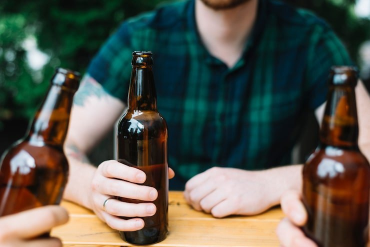

🍺 Потребление алкоголя в России рухнуло до минимума с 1996 года — 7,52 литра на человека за…
С начала года показатель снизился ещё на 0,54 литра.…
Сегодня отмечается день образования нашего родного и любимого города Симбирска-Ульяновска. С праздником, ульяновцы!…


С начала года показатель снизился ещё на 0,54 литра.…

Генеральный директор ульяновского автозавода Ильнур Сахабиев сдержал свое обещание и подарил ведущей программы «Наше всё» на Первом канале Полине Воробьевой розовый УАЗ "Патриот".…

Чтобы не пропустить самые яркие и интересные события, обязательно смотрите наш дайджест . А вы уже там? 😍 — да! 😭 — нет……

Именно здесь в 1833 году Александр Пушкин гостил у своего друга Николая Языкова.…
Теперь на НВП приходится 68 часов — это половина курса «Основы безопасности и защиты Родины». Учиться военному делу дети будут с 8 класса.
Возник 10.09, пик 11.09 — сюжет держали 16 источника. Полная дуга — в недельнике.